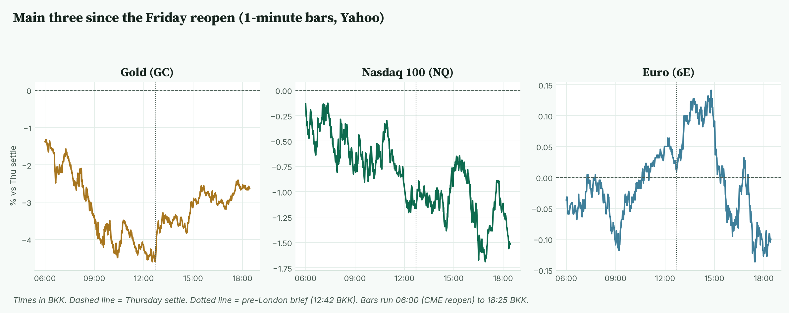
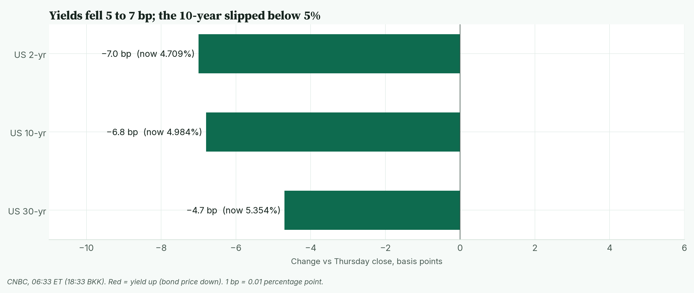
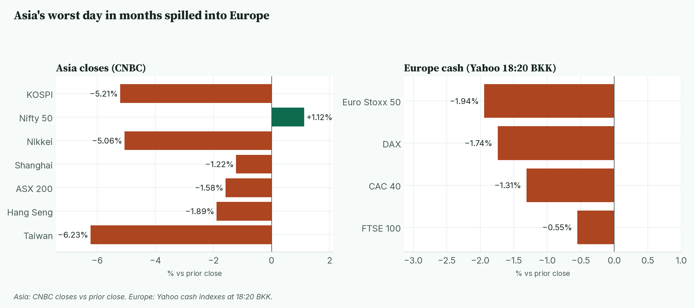
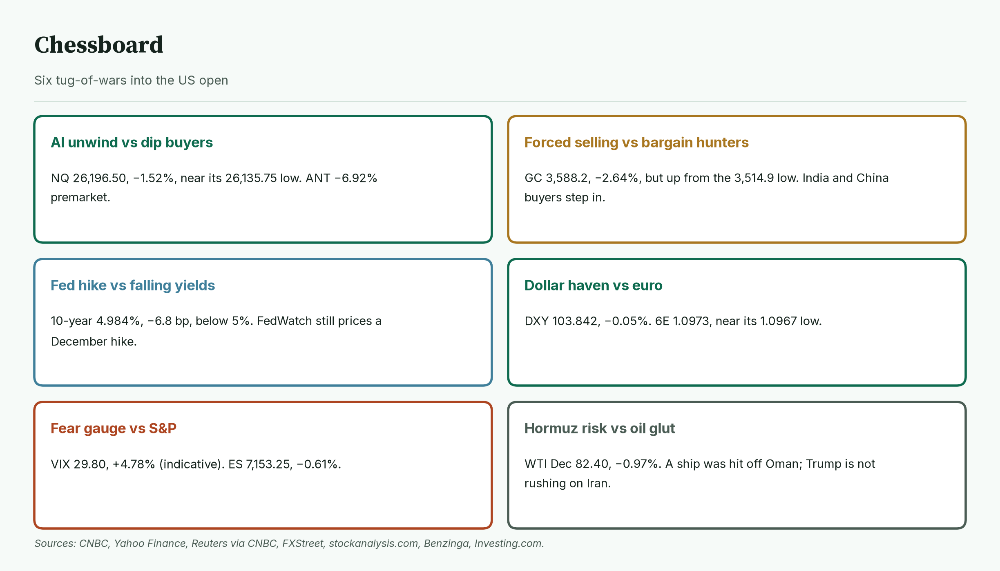
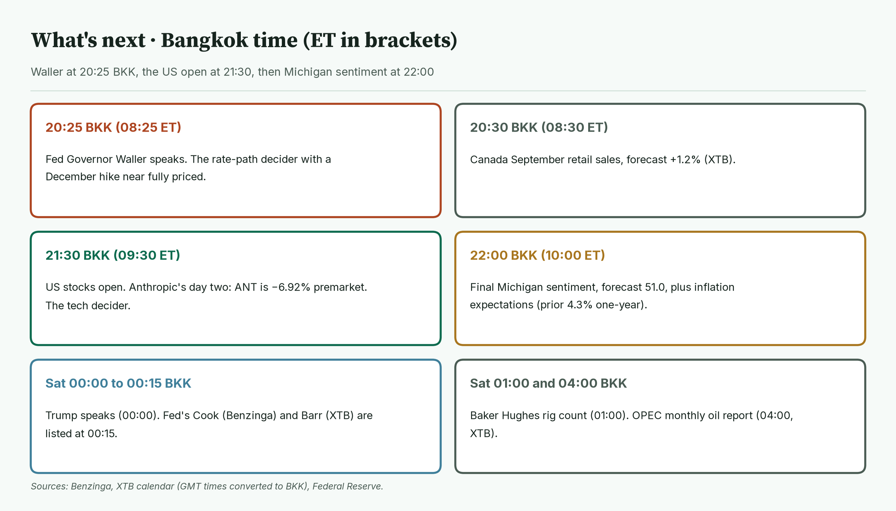
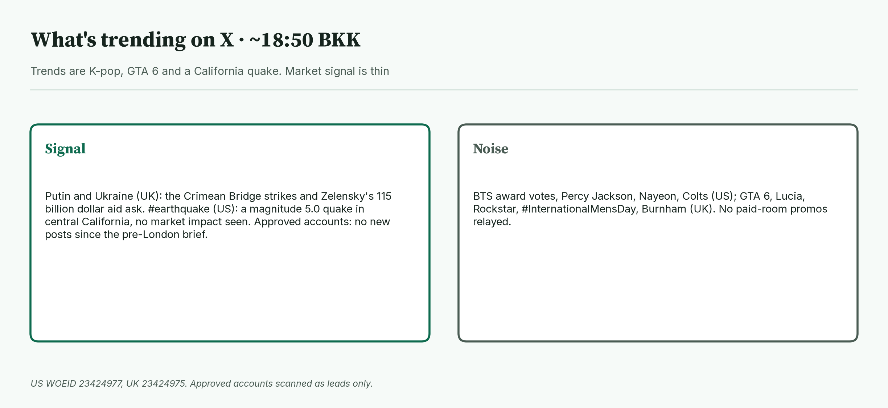

April · Market Intel, pre-NY · Fri Nov 20, 2026 · ~18:55 BKK / ~06:55 New York
Headline: The AI sell-off keeps rolling into New York. Nasdaq futures slid further to 26,196.50 (−1.52%), and Anthropic is −6.92% premarket. Gold futures bounced to 3,588.2 (−2.64%) from the 3,514.9 low. Euro futures are 1.0973 (−0.10%). The 10-year yield fell below 5%. Fed Governor Waller at 20:25 BKK and the US open at 21:30 BKK decide the session.
So what: money is running to bonds, not gold. Falling yields say traders now doubt the Fed can hike into a market rout.
 Caption: Futures at 18:25 BKK versus Thursday's settle. Gold and Nasdaq lead the losses. The VIX is an indicative pre-open print.
Caption: Futures at 18:25 BKK versus Thursday's settle. Gold and Nasdaq lead the losses. The VIX is an indicative pre-open print.
1) Main instruments The three main contracts since the Friday reopen, as a % move from Thursday's settle. Gold turned up after the pre-London brief. Nasdaq kept sliding, and the euro gave back its gain. |
 Caption: The three main contracts since the Friday reopen, as a % move from Thursday's settle. Gold turned up after the pre-London brief. Nasdaq kept sliding, and the euro gave back its gain.
(Quotes are Yahoo Finance futures at 18:25 BKK (06:25 New York), matching CNBC. Session highs and lows use Yahoo 1-minute bars from the 06:00 BKK CME reopen (18:00 New York Thursday). The first bar is 06:00 BKK.)
Caption: The three main contracts since the Friday reopen, as a % move from Thursday's settle. Gold turned up after the pre-London brief. Nasdaq kept sliding, and the euro gave back its gain.
(Quotes are Yahoo Finance futures at 18:25 BKK (06:25 New York), matching CNBC. Session highs and lows use Yahoo 1-minute bars from the 06:00 BKK CME reopen (18:00 New York Thursday). The first bar is 06:00 BKK.)
- Gold futures (GC, Dec): 3,588.2, −2.64%, at 18:25 BKK. Driver: forced selling to cover tech losses, plus a December Fed hike outlook (Reuters via CNBC). Thursday's settle was 3,685.5. Today's range is 3,514.9 (12:16 BKK) to 3,638.1 (06:06 BKK). It is up from 3,518.9 at the pre-London brief. Spot gold is 3,586.62 (CNBC, 18:35 BKK). Its low of 3,513.54 was the lowest since September 4, 2025, and gold is down about 8% this week (Reuters via CNBC).
- Nasdaq 100 futures (NQ, Dec): 26,196.50, −1.52%, at 18:25 BKK. Driver: Anthropic's debut failed to restore faith in AI spending, and chip stocks keep falling (Yahoo Finance, stockanalysis.com). Thursday's settle was 26,600.25. Today's range is 26,135.75 (16:31 BKK) to 26,603.50 (06:00 BKK). It is down from 26,300.25 at the pre-London brief and sits near the low.
- Euro futures (6E, Dec): 1.0973, −0.10%, at 18:25 BKK. Driver: the dollar held firm as a haven while European stocks fell (CNBC, Yahoo). Thursday's settle was 1.09845. Today's range is 1.0967 (17:28 BKK) to 1.1000 (14:48 BKK). It is down from 1.0986 at the pre-London brief and sits near the low.
- Takeaway: gold found buyers after London opened. Nasdaq and the euro did not.
Context. The dollar index (DXY, the dollar against six major currencies) is 103.842, −0.05% (CNBC, 18:35 BKK). The 10-year US yield (what the US government pays to borrow for 10 years) is 4.984%, down 6.8 basis points (CNBC, 18:33 BKK; a basis point is 0.01 percentage point). The VIX (the "fear gauge" built from S&P 500 option prices) is 29.80, +4.78% (CNBC, 18:35 BKK, an indicative pre-open print; Yahoo shows 29.46). US oil (CL, December) is 82.40, −0.97% (CNBC, 18:11 BKK). S&P 500 futures (ES) are 7,153.25, −0.61% (Yahoo, 18:25 BKK). Bitcoin is $61,737, −0.55% versus CNBC's previous close (CNBC/Coin Metrics, 18:35 BKK).
2) Premarket earnings and movers
- AI and chip names lead the losses. Prices are Yahoo premarket at 18:31 to 18:37 BKK.
- Anthropic −6.92% at 90.45 on its second day. It closed Thursday at 97.17, 17% above its $83 IPO price (Yahoo, CNBC).
- AMD −6.12%, Intel −4.90%, Micron −4.48%, TSMC −4.09%, Broadcom −2.68%, Nvidia −2.34%. CoreWeave is −4.05% and Nebius −4.91% (Yahoo).
- Intuit −9.84% at 279.50. Quarterly revenue rose 12% to $4.4 billion, but it cut its full-year revenue outlook to $23.08 to $23.37 billion (Investing.com, company results).
- Ross Stores −3.36% after mixed results (Yahoo, Benzinga). Keysight −3.87% despite beating estimates (Yahoo, Benzinga). Walmart +1.67% (Yahoo).
- Mentor: guidance is a company's own forecast. Markets often care more about it than the quarter just reported, because prices look forward.
- Takeaway: the premarket is voting against the AI trade for a second day.
3) Rates, FX and oil Yields fell 5 to 7 basis points across the curve. The 10-year dropped below 5%. |
 Caption: Yields fell 5 to 7 basis points across the curve. The 10-year dropped below 5%.
Caption: Yields fell 5 to 7 basis points across the curve. The 10-year dropped below 5%.
- CNBC, 18:33 BKK: 2-year 4.709% (−7.0 bp), 10-year 4.984% (−6.8 bp), 30-year 5.354% (−4.7 bp). The 10-year was 5.012% at the pre-London brief.
- The Fed. FedWatch odds of a 25 bp December hike are 97.3% (FXStreet) to 99.3% (Reuters via CNBC), depending on the time checked.
- Dollar. DXY is 103.842, up from 103.803 at the pre-London brief. EUR/USD is 1.0964 (CNBC, 18:35 BKK).
- Yen. USD/JPY is 158.76, −0.57% (CNBC, 18:35 BKK). The yen is gaining as a haven.
- Oil. WTI (December) 82.40 and Brent (January) 91.49, −0.53% (CNBC, 18:11 to 18:25 BKK). CNBC's session ranges are WTI 81.55 to 84.00 and Brent 90.06 to 92.89. WTI was 83.76 at the pre-London brief.
- Iran risk. A vessel was hit by an "unknown projectile" off Oman in the Strait of Hormuz, UK maritime authorities said. Trump said he is not "rushing into any decision" on Iran (UKMTO, Axios via Benzinga).
- Takeaway: bonds are the haven of choice. Oil is drifting lower despite Gulf risk.
4) Why it matters Asia's chip markets took the worst hit, and Europe followed. India was the one gainer. |
 Caption: Asia's chip markets took the worst hit, and Europe followed. India was the one gainer.
Caption: Asia's chip markets took the worst hit, and Europe followed. India was the one gainer.
- Asia closed deep in the red: Taiwan −6.23%, KOSPI −5.21%, Nikkei −5.06%, Hang Seng −1.89%, ASX 200 −1.58%, Shanghai −1.22%. Nifty is +1.12% (CNBC). Taiwan's close is 36,033.29; the pre-London brief used an earlier −6.63% print.
- SoftBank closed −14.48%, its worst day since August 2024 (CNBC).
- Europe is lower. Euro Stoxx 50 −1.94%, DAX −1.74%, CAC 40 −1.31%, FTSE 100 −0.55% (Yahoo, 18:20 BKK).
- UK retail sales rose 0.7% in October (ONS), against a −0.4% forecast (XTB).
- Asian shares are on track for their worst week since March 2020 (Yahoo Finance).
- Mentor: when stocks fall and bond yields fall together, investors are buying safety. That usually means they expect slower growth ahead.
- Takeaway: New York opens into a global de-risking, with tech hit hardest.
5) Chessboard Six tug-of-wars into the US open. The AI unwind and the Fed move the main three fastest. |
 Caption: Six tug-of-wars into the US open. The AI unwind and the Fed move the main three fastest.
Caption: Six tug-of-wars into the US open. The AI unwind and the Fed move the main three fastest.
- AI unwind vs dip buyers. NQ −1.52%, near its 26,135.75 low. ANT −6.92% premarket.
- Forced selling vs bargain hunters. GC 3,588.2, up from the 3,514.9 low. Physical demand in India and China strengthened this week (Reuters via CNBC).
- Fed hike vs falling yields. The 10-year is 4.984%, −6.8 bp. FedWatch still prices a December hike.
- Dollar haven vs euro. DXY 103.842. 6E 1.0973, near its 1.0967 low.
- Fear gauge vs S&P. VIX 29.80 (indicative). ES 7,153.25.
- Hormuz risk vs oil glut. WTI 82.40, −0.97%.
- Takeaway: the board leans risk-off. Bonds and the yen are the winners.
6) US data calendar (BKK times, ET in brackets) Waller comes first, then the US open. Michigan sentiment closes out the data week. |
 Caption: Waller comes first, then the US open. Michigan sentiment closes out the data week.
Caption: Waller comes first, then the US open. Michigan sentiment closes out the data week.
- 20:25 (8:25 AM ET): Fed Governor Waller speaks (Benzinga, XTB). This is the Fed decider.
- 20:30 (8:30 AM ET): Canada September retail sales, forecast +1.2% (XTB).
- 21:30 (9:30 AM ET): US stocks open. Anthropic's second day. This is the tech decider.
- 22:00 (10:00 AM ET): final University of Michigan sentiment, forecast 51.0 (XTB), plus inflation expectations (prior one-year 4.3%). The pre-London brief cited a 51.7 estimate from another calendar.
- Sat 00:00 (12:00 PM ET): Trump speaks (XTB). Sat 00:15 (12:15 PM ET): Fed's Cook (Benzinga) and Barr (XTB).
- Sat 01:00 (1:00 PM ET): Baker Hughes rig count. Sat 04:00 (4:00 PM ET): OPEC monthly oil report (XTB).
- Takeaway: a Waller hint that the Fed can pause would lift gold and the euro.
7) Scenarios and levels
- Risk-off continues (tech slides, hawkish Waller). Watch GC 3,514.9, NQ 26,135.75 and 6E 1.0967 for breaks lower.
- Steady (the base case). Ranges likely hold. GC 3,514.9 to 3,638.1, NQ 26,135.75 to 26,603.50, 6E 1.0967 to 1.1000.
- Relief bounce (softer Waller, dip buying). NQ could retest 26,603.50. Gold and the euro could test 3,638.1 and 1.1000.
- These are possible paths, not forecasts.
8) Undercovered
- Intuit sold Mailchimp for about $3.68 billion, roughly 69% below the about $12 billion it paid in 2021. It also blamed a shift to AI tools for slower Credit Karma growth (Investing.com).
- Wells Fargo's research arm estimates October CPI at 4.0% a year. It warns rate risk may be underpriced (Wells Fargo Investment Institute, via Benzinga). This is an estimate, not official data.
- Iran may try to move oil past the US naval blockade, a risk adviser said, citing TankerTrackers (Benzinga). This is a claim, not confirmed.
- Lagarde gave her last Frankfurt banking congress speech as ECB President. Her top worry is AI-boosted cyber threats (ECB, Reuters via StreetInsider).
- Takeaway: AI is now hurting old business models, not just AI stocks.
9) What's trending on X (~18:50 BKK) Trends are K-pop, GTA 6 and a California quake. The market signal is thin. |
 Caption: Trends are K-pop, GTA 6 and a California quake. The market signal is thin.
Caption: Trends are K-pop, GTA 6 and a California quake. The market signal is thin.
- US: #earthquake, #DAESANGFORBTS, #PercyJackson, Colts.
- UK: GTA 6, Putin, Ukraine, Burnham.
- Signal: "Putin" and "Ukraine" follow Ukraine's strikes on the Crimean Bridge and Zelensky's aid request at the Coalition of the Willing summit (X News). "#earthquake" is a magnitude 5.0 quake in central California (X News).
- Approved accounts: Timiraos, Tavi Costa, Smashelito and vwaptrader1 had no new posts since the pre-London brief. No paid-room promos relayed.
- Noise: BTS award votes, Percy Jackson, Nayeon, GTA 6, #InternationalMensDay.
Bottom line: the AI unwind is now a bond rally, and gold is stabilising. For Jim: Nasdaq at 26,196.50 sits near its 26,135.75 low. Gold at 3,588.2 sits mid-range, 3,514.9 to 3,638.1. The euro at 1.0973 sits near its 1.0967 low. Interpretive note: Waller at 20:25 BKK sets the rate tone; the US open at 21:30 BKK shows whether dip buyers show up for Anthropic's day two. 🔮 Interpretive, not data: the Sun moves into Sagittarius this weekend, the sign of long-range bets. Fitting as the market questions its biggest one. Symbol, not signal.
Confidence: Futures levels: high (Yahoo, matching CNBC). Session ranges: Yahoo 1-minute bars from the 06:00 BKK reopen. WTI and Brent levels and ranges: CNBC, because Yahoo's CL=F has rolled to January. Yields, DXY, VIX, yen, Bitcoin, spot gold and Asia: CNBC, time-stamped. VIX: indicative pre-open. Europe: Yahoo, 18:20 BKK. Premarket prices: Yahoo, 18:31 to 18:37 BKK. Gold low, weekly drop, physical demand and 99.3% FedWatch: Reuters via CNBC. 97.3% FedWatch: FXStreet. Intuit: Investing.com. Ross, Keysight, Iran, Wells Fargo: Benzinga. SoftBank: CNBC. UK retail: ONS; forecast XTB. Calendar: Benzinga, XTB (GMT times converted). Lagarde: ECB. X trends and news: X tools; approved accounts are leads only. Removed: a Fed staff pay item from Nick Timiraos (not checked against a primary source).
Charts: /workspace/april-charts/2026-11-20/pre-ny-{scoreboard,main3,rates,asia,chess,leading,xsplit}.png |